Kaguya
Contributor: Phạm Việt Trung
1. Tổng quan (Overview)
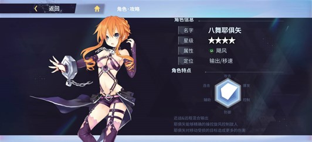
Nhân vật: 4 sao
Hệ nguyên tố: Phong (Bão – Storm)
Vai trò: Dps chính/phụ
Mô tả chung: YKaguya là nhân vật 4 sao hệ Phong gây sát thương hỗn hợp tầm xa và cận chiến (chủ yếu tầm xa) với những cơn lốc, khống chế đối phương, gây sát thương lớn cho mục tiêu bị hạn chế chuyển động.
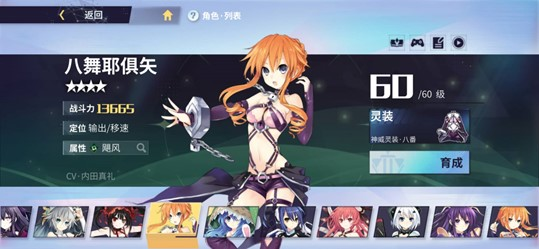
2. Nội tại (Passive)
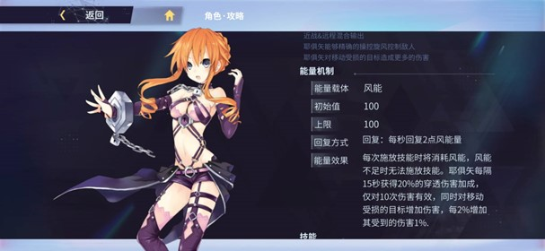
Khởi đầu: 100 điểm
Giới hạn: 100 điểm
Hồi phục: Hồi 3 điểm năng lượng (mana) gió mỗi giây
Hiệu ứng: Mỗi khi thi triển kĩ năng, năng lượng gió sẽ bị tiêu hao và không thể thi triển kĩ năng nếu năng lượng gió (Mana -Mp) không đủ. Kaguya nhận thêm 20% sát thương xuyên giáp (pen dmg) sau mỗi 15 giây, chỉ có hiệu lực trong 10 hit. Đồng thời tăng sát thương lên các mục tiêu bị nhận sát thương trong khi di chuyển, mỗi 2% hạn chế di chuyển tăng 1% sát thương.
3. Cấp độ (Level)
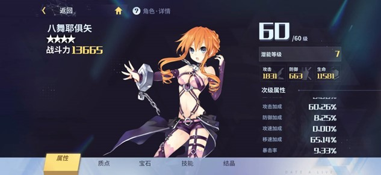
4. Tiềm năng (Potential)
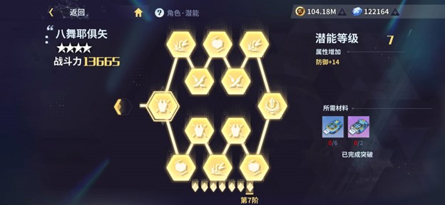
Tối đa 7 tầng: Nâng tiềm năng tối đa sẽ cho bạn các chỉ số cũng như lông để nâng cấp các ô điểm ở 4 nhánh kĩ năng.
5. Thông tin kĩ năng
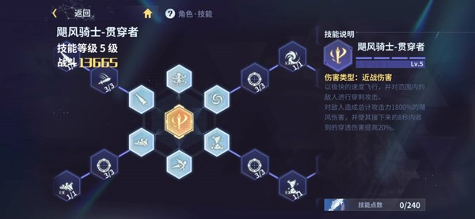
Cận chiến: tung ra 3 đòn đánh vào kẻ địch, mỗi đòn gây lần lượt 50-55-60% phong sát thương. (Wind dmg)
o Ex1: aa có thể tung tới 4 đòn tấn công liên tiếp, gây wind dmg = 30% Atk.
o Ex2: aa có thể tung tới 5 đòn tấn công liên tục, gây wind dmg = 100% Atk.
o Ex3: aa có 50% hồi 1 Mp mỗi khi đánh thường trúng mục tiêu.
b. Skill1 (High pressure air gun): 15Mp – CD: 1s
Khai hoả Phong đại pháo tấn công kẻ địch trước mặt theo đường thẳng, gây wind dmg = 210% sức mạnh công kích (Atk)
o Ex1: Skill có thể sạc 2 mức, miễn nhiễm khống chế khi đang sạc. Khi sạc đầy gây wind dmg = 375% Atk..
o Ex2: Skill nâng lên 3 mức sạc, có thể thay đổi hướng và vị trí trong quá trình tích tụ, gây wind dmg = 700% Atk.
o Ex3: Kaguya giật lui về phía sau 1 đoạn ngắn sau khi khai nòng Phong đại pháo ở mức sạc tối đa, gây wind dmg = 825% Atk.
c. Skill 2 (Destruction Tornado): 20Mp – CD: 5s
Tạo 1 cơn lốc xoáy nhỏ về phía trước, kéo dài 2s, gây wind dmg = 270% Atk.
o Ex1: Khi lốc xoáy xuất hiện sẽ giữ nguyên vị trí trong một thời gian ngắn, sau đó mạnh lên thành một cơn lốc xoáy cấp trung và tiếp tục di chuyển về phía trước một khoảng nhất định, gây wind dmg = 375% Atk.
o Ex2: Lốc xoáy cấp trung tiếp tục giữ nguyên vị trí, sau đó mạnh lên thành lốc xoáy siêu cấp, rồi di chuyển về phía trước một khoảng nhất định, phát nổ tại vị trí biến mất, gây wind dmg = 520% Atk.
o Ex3: Trên đường di chuyển, sát thương lốc xoáy tăng 5% mỗi 0.2s, stack tối đa 10 lớp.
d. Skill 3 (Death Thorn): 25Mp – CD: 10s
Công chúa gai Yor, ý lộn, Kaguya bắn một loạt phong tiễn về phía trước, gây wind dmg bằng 200% atk và đẩy lui mục tiêu, đồng thời giảm 20% tốc độ di chuyển trong 10s của đối phương.
o Ex1: Triệu hồi thêm 5 phong tiễn nhỏ bắn về phía trước, trên đường bay để lại các luồng gió tích tụ lại hình thành một đại phong tiễn gây wind dmg = 350% Atk.
o Ex2: Như Ex1 nhưng tăng số phong tiễn lên 10, có thể đi xuyên mục tiêu, gây wind dmg = 500% Atk.
o Ex3: Kĩ năng gây tối đa win dmg = 600% Atk.
e. Ultimate (Hurricane Knight – Penetrator)
Bay với tốc độ cao rồi thực hiện các đòn tấn công xuyên thấu vào kẻ thù trong phạm vi, gây wind dmg = 1800% Atk, đồng thời tăng 20% sát thương xuyên giáp (Pen dmg) trong 8s.
6. Bộ vết thánh (Sephira): Penetrator 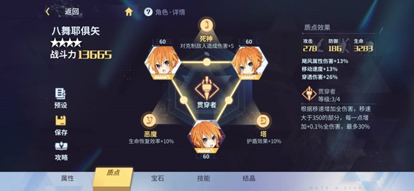
Hiệu ứng riêng từng mảnh:o 10% wind dmg
o 20% pen dmg
o 15% spd
b. Hiệu ứng khi trang bị đủ bộ:
Tăng tổng sát thương dựa trên tốc độ di chuyển, khi Spd >350, tăng 0.06/0.08/0.1/0.12% sát thương tổng với mỗi điểm tốc độ di chuyển, tối đa 15/20/25/30% (dựa theo mức đột phá của sephira, tối đa ở 6*)
Đồng thời, 3 mảnh sephira sẽ giúp tạo 3 đường liên kết kabbalah, giúp đem lại 3 chỉ số cộng thêm.
o +10% heal effect
o +10% shield effect
o +5% dmg lên kẻ địch bị khống chế
7. Thiên sứ (Raphael: Cuồng phong kị sĩ)
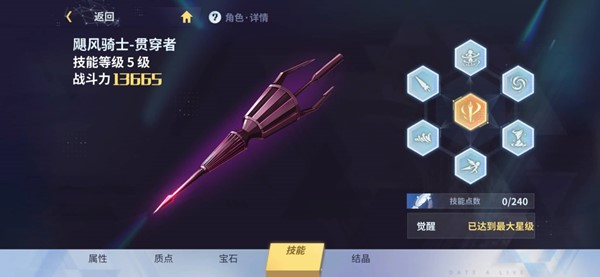
6 cung mệnh (CM) thiên sứ (1 CM = 60 Mảnh Kaguya)
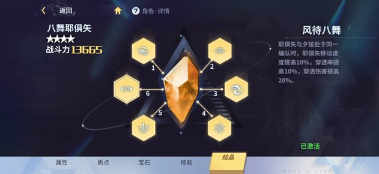
• Ô thiên sứ thứ nhất: Skill 1 tăng 25% tốc độ sạc, khi sạc đầy tăng 20% sát thương.• Ô thiên sứ thứ hai: Mỗi khi Kaguya có 100 Mp, tăng 15% Wind dmg trong 10s. Mỗi khi Mp về 0, hồi 4 Mp mỗi giây trong 5s kế tiếp, hồi chiêu 15s.
• Ô thiên sứ thứ ba: Trong lúc niệm skill 1 được nhận 50% giảm thương, skill 2 hấp thụ mọi đạn đạo.
• Ô thiên sứ thứ tư: Kaguya tăng cường nội tại dựa trên tốc độ di chuyển:
+ Trên 480 tốc độ di chuyển (movement speed – spd), CD buff pen dmg giảm còn 14s, dmg buff với mỗi 2% làm chậm tăng thành 1,15%.
+ Trên 540 spd, CD buff giảm còn 12s, dmg buff với mỗi 2% làm chậm tăng lên 1,3%
+ Trên 600 spd, CD buff giảm còn 10s, dmg buff với mỗi 2% làm chậm tăng đến 1.5%
• Ô thiên sứ thứ năm: Với mỗi 10 điểm spd, tăng 0.5% sát thương cho 3 kĩ năng cơ bản.
• Ô thứ sáu: Khi có Yuzuru trong đội, tăng 10% spd, 10% pen rate, 20% pen dmg.
8. Tương tác với các hệ nguyên tố
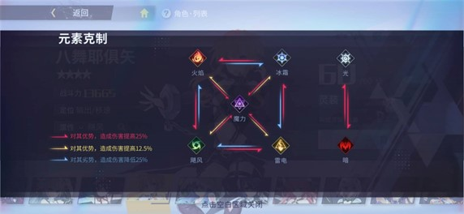
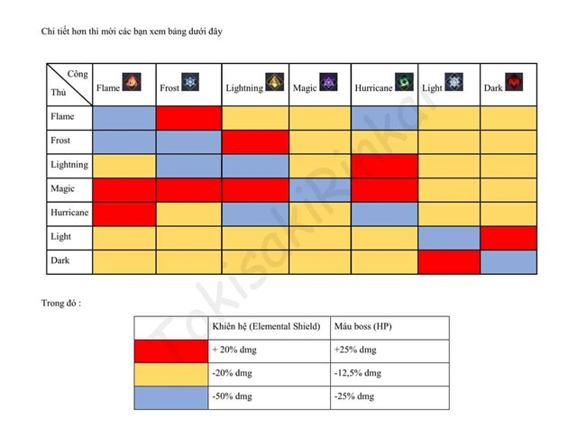
Ngắn gọn thì nên sử dụng Kaguya khi đối phương mang hệ Lôi, Phép, không nên dùng khi đối phương là hệ Hoả, Phong.
9. Đá quý (Gem stone)
Wind Stone:+ Bộ 2 viên: Tăng 20% Spd
+ Bộ 4 viên: Khi spd >600, wind dmg + 30%, mỗi giây không chịu sát thương tăng 3% dmg, tối đa 30%. Chịu sát thương bất kì sẽ làm mới lại hiệu ứng, thời gian hồi 5s tính từ khi chịu sát thương.
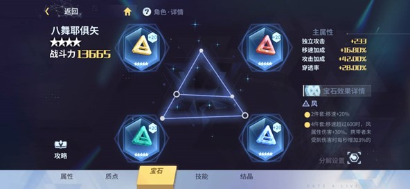
Các chỉ số nên ưu tiên: Pen rate, Pen dmg, Spd…ngoài ra các chỉ số khác nên có: crit rate, crit dmg, atk bonus, dmg ratio…
10. Đánh giá
o Kaguya là nhân vật 4 sao rất tốt, có thể coi là tốt nhất dàn nhân vật 4 sao. Có thể sử dụng để khắc chế mục tiêu hệ lôi, hệ phép hoặc khi muốn đổi gióo Sephira ngành (Penetrator) là 1 trong những điều kiện cần (gần như bắt buộc) để sử dụng
o Thích hợp đi với các boss bay nhảy ít, độ cơ động không quá cao.
~ Contributor: Phạm Việt Trung
~